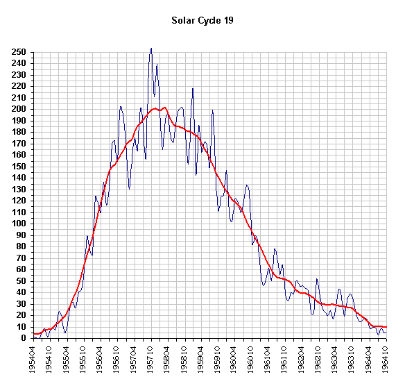
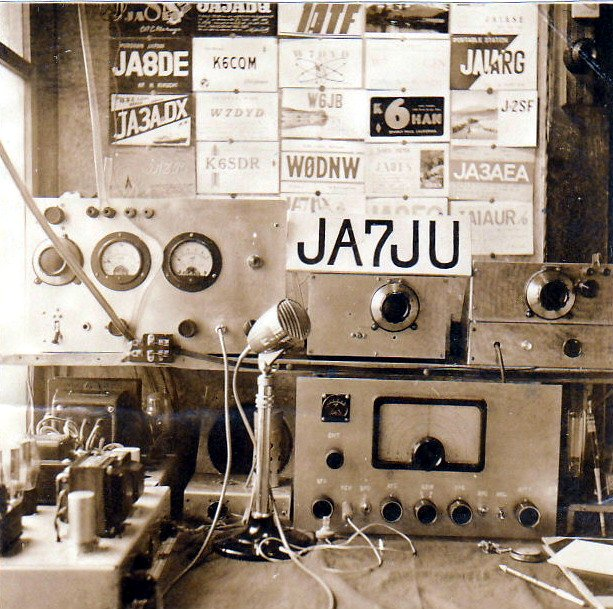
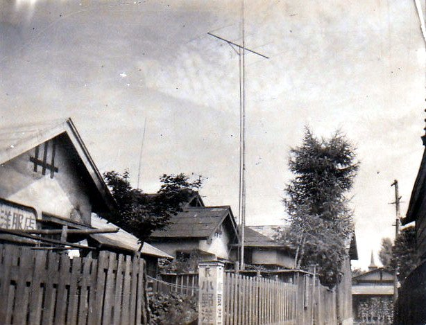

[DX Report Jan-Jul.1958] TIME:JST(UTC+0900) Report from JA7JU (QN00) 
01.Jan.1958
◎7MCのクロスモード(CW/AM)で北米カリフォルニアとQSO。北米では7,000-7,100MCはCWバンドなので、
この周波数で出てくるCWの局をJAのAM局(主に2アマ局)がコールしてQSOしていた。
00:25JST＝K6SDRとQSO(RST589/RS57)。
22:00JST＝K6CQMとQSO(RST599/RS57)。
03.Jan.1958
◎早朝(08:30-10:00JST)に6mで北米がオープン。(QSOは出来ず)
入感を確認した局：W7VOG.W7RG?.W7INX.VE7AQQ.(JA1AYC.JA1UK)。
◎この時期にはJA7JUの装置も、受信部はコンバーター、送信部はXtalからVFOに変更されていた。
05.Jan.1958
◎北米が入感。確認出来た局：W7RT.W7FVN.W7VOG.W7K??。
06.Jan.1958
◎北米が入感(08:55-09:25JST)。確認出来た局：VE7AQQ.W7PRW.W7UGK.W7ERA.W7VIC & VK5MG。
08.Jan.1958
◎北米が入感(08:25-09:45JST)。確認出来た局：
W7VOG.W7DYD.W7ZPF(YL).W7FIV.W7LVK.K0YQG.W9HGE.W7BCN.W7QIG.W7ILL.K0DNW.VE6MO.
(JA8AO.JA8BU.JA8CJ.JA8CO.JA7GB)。
09.Jan.1958
◎北米が入感(08:25-11:00JST)。確認出来た局：
W7DYD.W7MKW.W7KIE.W7RGS/7.W7FBZ.W7ZPS(YL).W7CIO.W7CWX.K0GQG.VE7CN.VE6MO.etc。
(JA1GP.JA2IF.JA8AO.JA8BY.JA8CJ.JA8CX.JA8GO.etc)
12.Jan.1958
◎北米が入感(08:30-09:10JST)。
確認出来た局：KL7AH.KL7CD(JA1ATF.JA1ALZ.JA2KB.JA3PF.JA4EV.JA4IO)
◎国内DXと初QSO。この日のQSOで6mのQSO数は13局となる。
JA2CX 09:32 50MC AM QSO (6m QSO#09) First JA7/JA2
JA2IF 09:37 50.- AM QSO (6m QSO#10)
JA3FV 09:40 50.- AM QSO (6m QSO#11) First JA3
JA3JJ 09:44 50.- AM QSO (6m QSO#12)
JA3LG 09:45 50.- AM QSO (6m QSO#13)
JA5EB 09:55 50.- AM QSO (6m QSO#14) First JA5
13.Jan.1958
◎北米が入感(08:10-09:30JST)。
確認出来た局：W0CNL.KL7??.(JA2AQ.JA7GB.JA7EV.JA8AO.JA8BU)
14.Jan.1958
◎北米が入感(09:30-10:35JST)。
確認出来た局：W0WBR.W7CJN.W7LK?.W0CNM.KL7CDB.KL7CHV(YL)
15.Jan.1958
◎北米が入感(08:40-10:30JST)。
◎確認出来た局：K0BGW.W0CNM.W0WDR.W0SMJ.K0CLJ.KL7CHV.(JA1BI.JA2IF.JA8BV.JA8CJ)
W0DNW 09:10 50.- CW/AM QSO (6m QSO#15)
  1958年当時のシャックと50MCの自作アンテナ(木枠に銅線を張った4EL)。 18.Jan.1958 ◎23:50JSTから7MCのクロスモード(CW/AM)で北米カリフォルニアのK6PBQとQSO(RST589/RS46)。 19.Jan.1958 ◎7MCのクロスモード(CW/AM)で北米カリフォルニアとQSO。 W6OA(00:12JST＝RST589/RS59)。 ◎W6HIZ(00:31JST＝QSO(RST589/RS59)。 ◎01:25JSTから7MCのクロスモード(CW/AM)でトンガのVR5AAとQSO(RST579/RS56)。 ◎6mで北米が入感(08:30-08:50JST)。 ◎確認出来た局：KL7AUV.KL7AIO(JA8CX.JA8CJ)。 29.Jan.1958 ◎23:05JSTから7MCのクロスモード(CW/AM)で北米カリフォルニアのW6RLNとQSO(RST599/RS57)。 31.Jan.1958 ◎01:05JSTから7MCのクロスモード(CW/AM)で北米カリフォルニアのK6RGOとQSO(RST589/RS57)。 
23.Feb.1958
◎北米入感。VE7AQQ(08:22JST-)。この頃からDXの入感は北米から南太平洋(VK)方面に変わった。
26.Feb.1958
◎01:40JSTから7MCのAMでアラスカのK2PMN/KL7とQSO(RST599/RS57)。
28.Feb.1958
◎VKがFBにオープン(12:10-13:30JST)。
◎確認出来た局：VK4WD.VK2ZAA.VK2XX.VK4GG.VK4KK(JA1AAT.JA1BIR.JA1AEQ.JA3KB.JA8CC.JA8GF)。
VK2ZAA 12:32 50.- AM QSO (6m QSO#18)
VK4GG 13:00 50.- AM QSO (6m QSO#19)

08.Mar.1958
◎VK4NGが入感(11:30-12:57JST)。
09.Mar.1958
◎VK4NGが入感(11:50-18:30JST)。
10.Mar.1958
◎VK'sがFBに入感(13:17-13:45)(17:45-21:10JST)。
◎他に入感していた局：VK4NG.VK6ZBU.VK4WD.VK4BT.VK4ZAT.VK4XJ.VK4XC.VK4GG.etc。
(JA1AAT.JA1BAZ.JA1BLV.JA1EC.JA1BDF.JA4KC.JA4IO.JA5AJ.JA5BG.JA6BI.JA6JY.JA7DH.JA7EV.
JA7JO.JA7LV.JA8CC.JA8CX.JA8CY.JA8GO.JA0AY)
VK4BT 10:26 50.- AM QSO (6m QSO#21)
VK5BC 10:55 50.- AM QSO
VK5MT 11:10 50.- AM QSO (6m QSO#22)
VK4RH 12:45 50.- AM QSO (6m QSO#23)
VK4KK 12:55 50.- AM QSO
VK6BE 13:14 50.- AM QSO (6m QSO#24)
11.Mar.1958
◎VK4'sが入感(19:20-19:30JST)。
13.Mar.1958
◎VK4NGが入感(18:30-19:05JST)
(JA7BL.JA7EV.JA7GB.JA7IQ.JA7IF.JA7JO.JA7DH)
14.Mar.1958
◎VK/ZL'sがFBに入感。初めてZLの信号を受信。
◎入感していた局：ZL1DE.ZL1WW.ZL1DE.VK3YS.VK3ARC.VK3ALZ.VK3ZDJ.VK5BC.etc。
(JA1BIR.JA2IF.JA7AA.JA7JN.JA7JW.JA8CC.JA8CX.JA8GO)
VK3PG 09:55 50.- AM QSO (6m QSO#25)
VK3ZDJ 11:06 50.- AM QSO (6m QSO#26)
15.Mar.1958
◎VK4NGが入感(10:25-10:50JST)。
16.Mar.1958
◎VK5BCが入感(13:30JST-)。
17.Mar.1958
◎VK4NG.VK2ZBOが入感(11:45-12:30JST)。
18.Mar.1958
◎入感していた局：VK3PG.VK3ALZ(JA8CX.JA8GF.JA8GD.JA8FY)
VK4HD 10:54 50.- AM QSO (6m QSO#27)
VK4NG 12:00 50.- AM QSO
19.Mar.1958
◎VK4NG.VK4LKが入感(11:50-12:15JST)。(JA7AA.JA7IF.JA0IB)
20.Mar.1958
◎ZL/VKがFBにオープン(08:55-09:35JST)。
◎入感していた局：ZL1BJ.ZL1WW.VK4LK(JA1AUH)。
21.Mar.1958
◎ZL/VKがFBにオープン(10:50-14:10JST)。ZL1BJ(ニュージーランド)と初QSO。
ZL1BJ 12:52 50.- AM QSO (6m QSO#28)
ZL1DE 13:06 50.- AM QSO (6m QSO#29)
◎入感していた局：ZL1WW.ZL1DE.ZL1ADP.VK3PG.VK3VY.VK4DW(JA1AEQ/0.JA2AH.JA3JJ.JA3LN.JA8CC.JA8GU)。
22.Mar.1958
◎ZL/VKがFBにオープン(09:25-18:30JST)。
◎入感していた局：ZL1MQ.ZL1UZ(A2).VK3ALZ.VK4ZBI.VK4WD.VK4KK.VK4ZAZ.VK4NG.VK5MT.etc。
(JA1BTB.JA3BW.JA3ADJ.JA7KJ.JA8CC.JA8GF)。
ZL1BJ 12:45 50.- AM QSO
23.Mar.1958
◎VK6ZBU.VK6ZIVが入感(15:30-15:45JST)。
25.Mar.1958
◎ZL/VKがオープン(11:17-13:55JST)(17:40-18:00)。
◎入感していた局：VK4WD.VK4ZBF.VK4ZGL(JA7CD.JA7EV.JA0HM)。
ZL1APL 13:45 50.- AM QSO (6m QSO#30)
VK4ZAZ 17:47 50.- AM QSO (6m QSO#31)
26.Mar.1958
◎VK4BT.VK5BCが入感(08:50-09:15JST)。
◎23:00JSTから7MCのクロスモード(CW/AM)でW7UVCとQSO(RST589/RS57)。
28.Mar.1958
◎VK4NG.VK4XJが入感(18:30-19:00JST)。
29.Mar.1958
◎VKがオープン(17:05-19:00JST)。
◎入感していた局：VK4NG.VK4KK.VK4WD.VK4XJ.VK4ZAZ.VK2ADT.etc。
(JA1BOV.JA1AGO.JA1BZ.JA1JB.JA1BLV.JA1ZB.JA3EK.JA3ACC.JA3QS.JA6BN.JA7CL.JA8CC.JA8GH)。
30.Mar.1958
◎VKがオープン(17:05-19:00JST)。
VK4NG 10:50 50.- AM QSO
VK6ZBG 11:35 50.- AM QSO (6m QSO#32)
◎入感していた局：VK4WD.VK4NG.VK4HD.VK4ZAZ.VK6BO.VK6BU.VK6WG.etc。
(JA7CL.JA7IF.JA8GG.JA8GO)。
|